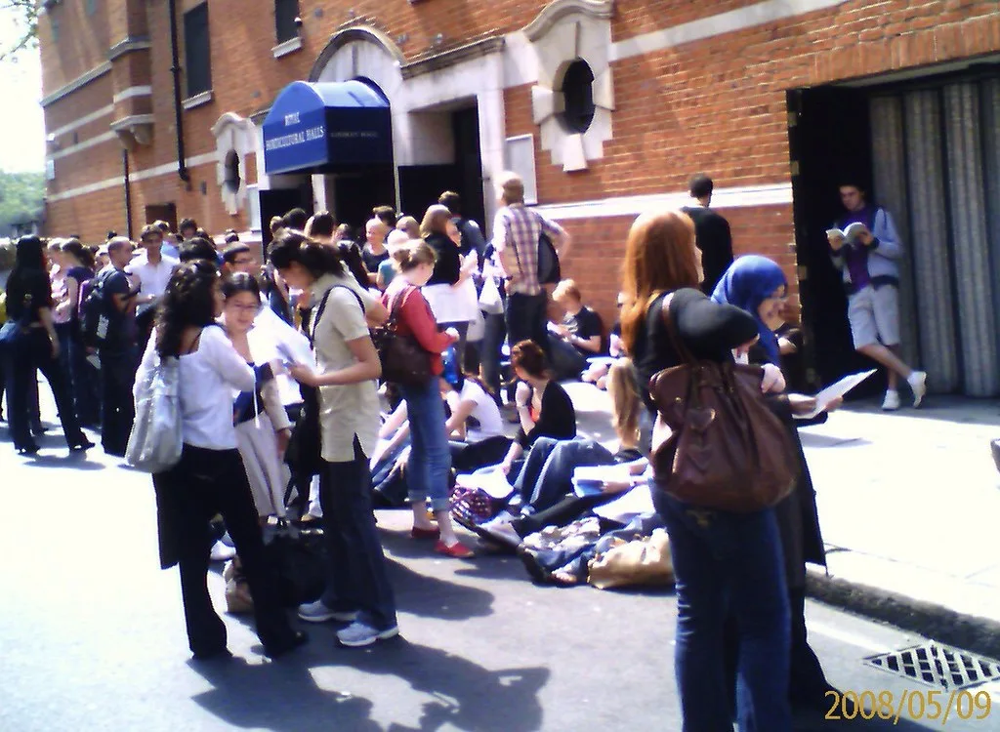
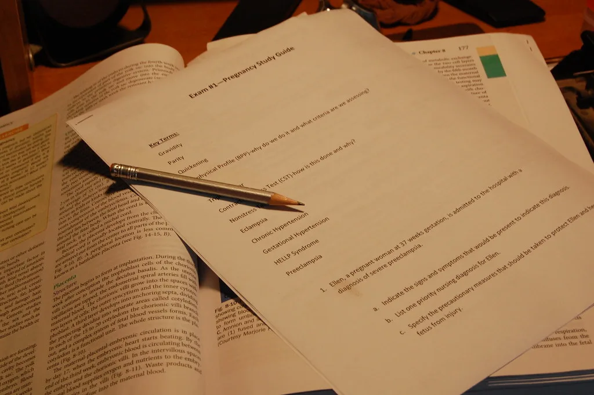

2027학년도 대학수학능력시험이 19일 전국 1300여 개 시험장에서 일제히 치러진다. 시험 하루 전인 18일에는 수험생들이 배정된 시험장을 미리 찾아 수험표를 받고 고사실 위치와 유의사항을 확인하는 예비소집이 진행됐다. 시험은 19일 오전 8시 40분 1교시 국어 영역을 시작으로 수학, 영어, 한국사·탐구, 제2외국어·한문 순으로 이어진다.
한국교육과정평가원 집계에 따르면 올해 수능 응시원서를 낸 사람은 모두 55만1864명으로, 지난해보다 2310명가량 줄었다. 고3 재학생은 35만5391명으로 전체의 64.4%를 차지했다. 재학생이 1만6000명 넘게 감소한 반면 졸업생과 검정고시 출신 등 이른바 N수생은 약 19만6000명으로 1만4000명가량 늘어 2004학년도 이후 23년 만에 가장 많은 규모를 기록했다.

N수생이 크게 늘어난 배경으로는 의과대학 정원을 둘러싼 변화와 상위권 대학 진학 경쟁, 학령인구 구조 변화 등이 복합적으로 거론된다. 재수 이상 수험생은 수능 준비 기간이 길어 성적 분포에 영향을 줄 수 있어, 입시업계에서는 상위권 경쟁이 예년보다 치열해질 수 있다는 전망을 내놓고 있다. 반면 재학생 수 감소로 중위권 이하에서는 수시 수능 최저학력기준 충족 여부가 변수가 될 수 있다는 분석도 함께 나온다. 지역별로는 대구에서 2만5000여 명, 제주에서 7400여 명이 시험을 치른다.
과목 선택에서도 뚜렷한 흐름이 나타났다. 입시업계 분석에 따르면 사회탐구 지원자는 지난해보다 8만3000명가량, 비율로는 11% 넘게 늘었다. 이공계 지망 수험생 가운데서도 상대적으로 학습 부담이 적다고 여겨지는 사회탐구를 선택하는 이른바 사탐런 현상이 이어진 결과로 풀이된다. 수학에서는 확률과 통계 선택자가 13% 늘었다. 선택 과목별 응시 인원이 크게 달라지면 표준점수와 등급 분포에도 영향을 줄 수 있어, 수험생들은 시험 이후 가채점 결과를 해석할 때 이런 변화를 함께 고려할 필요가 있다.
올해는 부정행위 방지 대책도 한층 강화됐다. 최근 국가자격시험에서 인공지능(AI) 기기를 활용한 부정행위 의혹이 잇따르자 교육당국은 스마트기기 반입 관리를 엄격히 하겠다는 방침을 밝혔다. 휴대전화나 스마트워치, 전자기기 등은 시험장에 가져오지 않는 것이 원칙이며, 반입했다면 1교시 시작 전 반드시 감독관에게 제출해야 한다. 소지 사실만 적발돼도 시험이 무효 처리될 수 있다.

지방자치단체들도 수험생 이동 지원에 나섰다. 서울시는 시험 당일 지하철 운행을 평소보다 27회 늘려 오전 6시부터 10시까지 집중 배차하고, 자치구별로 수송 지원 차량 614대를 시험장 인근 역과 정류소에 배치한다. 부산시는 공공기관과 50인 이상 기업체의 출근 시간을 오전 10시로 늦춰 아침 교통량을 분산하기로 했다. 수험생은 오전 8시 10분까지 입실을 마쳐야 한다.
수능이 끝나면 가채점과 수시 대학별 고사, 정시 원서 접수로 이어지는 본격적인 입시 일정이 시작된다. 성적표는 다음 달 초 수험생에게 통지될 예정이다. 교육당국은 시험 당일 수험생들이 신분증과 수험표를 꼭 챙기고, 예상치 못한 교통 혼잡에 대비해 평소보다 일찍 집을 나설 것을 당부했다.